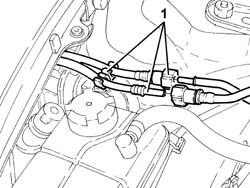
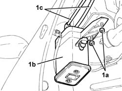
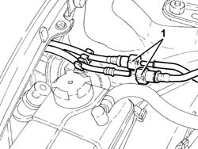
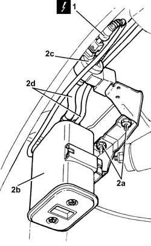

1080E20 active carbon filter for fuel vapours - r + r
- Path
- Procedures > 10 ENGINE > 1080 EXHAUST EMISSION CONTROL SYSTEM > 1080E evaporation control system > 1080E20 active carbon filter for fuel vapours - r + r
- Kind
- repair procedure (removal / refitting; the operation number is the code)
- Applies to
- engines: 1.6 TS, 2.0 TS, 3.2 V6; all production periods
- Interactive page
- https://sloeber94.github.io/elrnDB-a147/en/#/3024885
Applies to: engines: 1.6 TS; all production periods
 Removing
Removing
 Refitting
RefittingPosition the vehicle on the ramp.
Proceed with the removal 4450B10 Front WHEEL (one) - R.R. (Right side).
Proceed with the removal 7055B64 Engine compartment DUST shield in front wheel arch (one), left or right - R.R. (Right side).
Proceed with the removal 7055B42 Additional FRONT WHEEL ARCH (one), left or right - R.R. (Right side).
1. Disconnect the rapid attachments for the fuel vapour recovery pipes and release these pipes from the fastenings.

Applies to: engines: 1.6 TS; all production periods
1. Undo the nuts (1a) and remove the fuel vapour active charcoal filter (1b) complete with pipes (1c).

Applies to: engines: 1.6 TS; all production periods
Refitting
RemovingPlace the fuel vapour active charcoal filter, complete with pipes, back in its housing and fasten it using the nuts.
Connect the rapid attachment coupling for the fuel vapour recovery pipes and secure.
Proceed with the refitting 7055B42 Additional FRONT WHEEL ARCH (one), left or right - R.R. (Right side).
Proceed with the refitting 7055B64 Engine compartment DUST shield in front wheel arch (one), left or right - R.R. (Right side).
Proceed with the refitting 4450B10 Front WHEEL (one) - R.R. (Right side).
Remove the car from the ramp.
Applies to: engines: 2.0 TS; all production periods
Removing
RefittingPosition the vehicle on the ramp.
Proceed with the removal 4450B10 Front WHEEL (one) - R.R. (Right side).
Proceed with the removal 7055B64 Engine compartment DUST shield in front wheel arch (one), left or right - R.R. (Right side).
Proceed with the removal 7055B42 Additional FRONT WHEEL ARCH (one), left or right - R.R. (Right side).
1. Disconnect the rapid attachments for the fuel vapour recovery pipes and release them from the fastenings.
Applies to: engines: 2.0 TS; all production periods
1. Undo the nuts (1a) and remove the fuel vapour active charcoal filter (1b) complete with pipes (1c).
Applies to: engines: 2.0 TS; all production periods
Refitting
RemovingPlace the fuel vapour active charcoal filter, complete with pipes, back in its housing and secure it using the nuts.
Connect the rapid attachment coupling for the fuel vapour recovery pipes and secure.
Proceed with the refitting 7055B42 Additional FRONT WHEEL ARCH (one), left or right - R.R. (Right side).
Proceed with the refitting 7055B64 Engine compartment DUST shield in front wheel arch (one), left or right - R.R. (Right side).
Proceed with the refitting 4450B10 Front WHEEL (one) - R.R. (Right side).
Remove the car from the ramp.
Applies to: engines: 3.2 V6; all production periods
Removing
Refitting.
Position the vehicle on the ramp.
Ensure that the ignition key is in OFF position, then disconnect the battery negative terminal (-).
 | Name | Connector |
|---|---|---|
- | Battery |
1. Disconnect the rapid attachments for the fuel vapour pipes.

Applies to: engines: 3.2 V6; all production periods
Proceed with removal 4450B04 right front wheel r r .
Proceed with removal 7055B66 Engine compartment DUST SHIELD protection in right front wheel arch - R.R. .
Proceed with removal 7055B91 Right front WHEEL ARCH LINER - R.R. .
1. Disconnect the electrical connection from the inlet fuel vapour enabling solenoid valve.
| Name | Connector |
|---|---|---|
1 | Fuel vapour recovery solenoid |
2. Undo the nuts (2a) and remove the fuel vapour active charcoal filter (2b) complete with fuel vapour flow to the intake enablement solenoid valve (2c) and pipes (2d).

Applies to: engines: 3.2 V6; all production periods
Refitting
RemovingPlace the active charcoal filter for fuel vapours complete with fuel vapour flow to the intake enablement solenoid valve and pipes back in its housing, then fasten it using the nuts.
Connect the electrical connection to the inlet fuel vapour enabling solenoid valve.
Proceed with refitting 7055B91 Right front WHEEL ARCH LINER - R.R. .
Proceed with refitting 7055B66 Engine compartment DUST SHIELD protection in right front wheel arch - R.R. .
Proceed with refitting 4450B04 right front wheel r r .
Connect the rapid connectors for the fuel vapour pipes.
Connect the negative (-) battery terminal.
Remove the car from the ramps.
Topics linked from this page (8)
- 4450B04 right front wheel r r
- 4450B10 Front WHEEL (one) - R.R.
- 7055B42 Additional FRONT WHEEL ARCH (one), left or right - R.R.
- 7055B64 Engine compartment DUST shield in front wheel arch (one), left or right - R.R.
- 7055B66 Engine compartment DUST SHIELD protection in right front wheel arch - R.R.
- 7055B91 Right front WHEEL ARCH LINER - R.R.
- A1B Battery ( Connectors )
- L10 Fuel vapour recovery solenoid